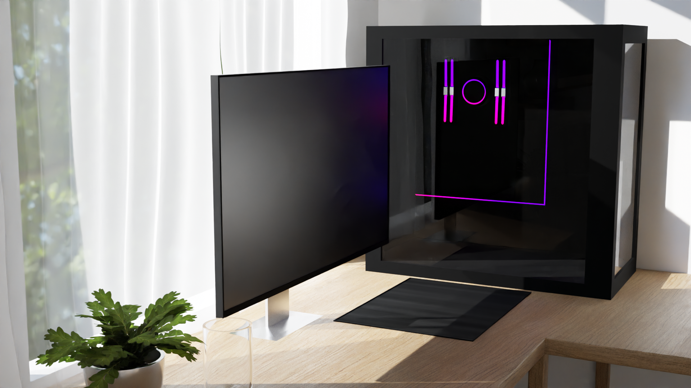
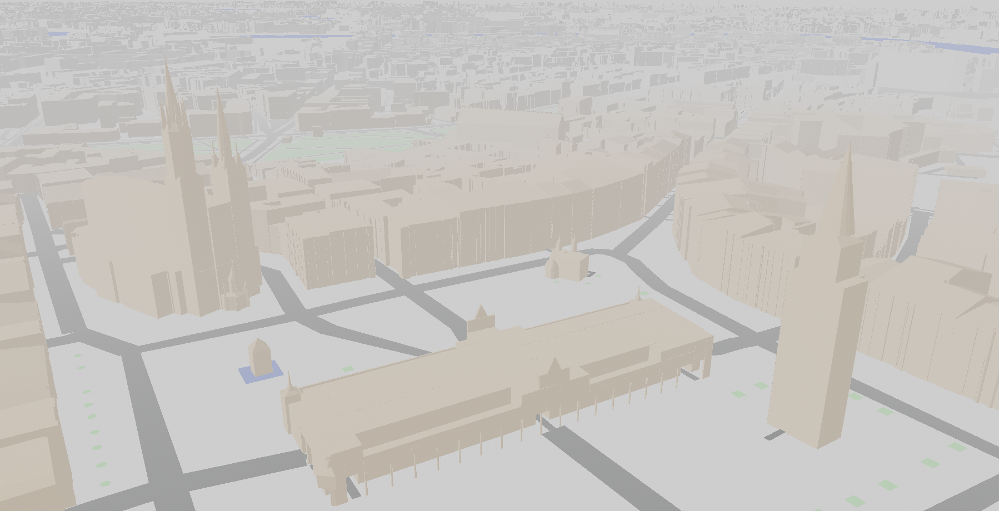

Grafika komputerowa jest nieodłączną częścią życia praktycznie wszystkich. Praktycznie niemożliwe jest uniknięcie zobaczenia choć jednej grafiki komputerowej (właśnie teraz jedną widzisz, przeglądając tę stronę). Grafika komputerowa to sztuka tworzenia obrazów za pomocą komputera. Możesz używać jej do wielu celów, takich jak ilustracje, animacje, gry czy strony internetowe. Na tej stronie poznasz podstawy grafiki 2D i 3D, web designu i innych zagadnień graficznych. Obejrzysz też przykłady, skorzystasz z tutoriali, otrzymasz porady i znajdziesz inspiracje. Jeśli grafika komputerowa cię interesuje to zapraszam do czytania!

Nie tylko sztuka
Grafika komputerowa to nie tylko tworzenie obrazów dla celów artystycznych czy rozrywkowych. To także sposób na przekazywanie informacji w postaci obrazów, które ułatwiają zrozumienie i analizę danych. Obrazy te mogą przybierać różne formy, takie jak wykresy, mapy, diagramy czy infografiki. Obrazy te mogą być tworzone za pomocą różnych technik graficznych, takich jak grafika rastrowa, wektorowa czy trójwymiarowa. Obrazy te mogą być używane w różnych dziedzinach, takich jak nauka, biznes, edukacja czy polityka. Obrazy te mogą pomagać odkrywać wzorce, trendy, zależności czy anomalie w danych, a także komunikować się z odbiorcami i przekazywać im ważne informacje.
